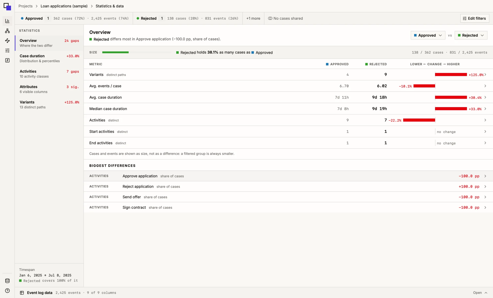
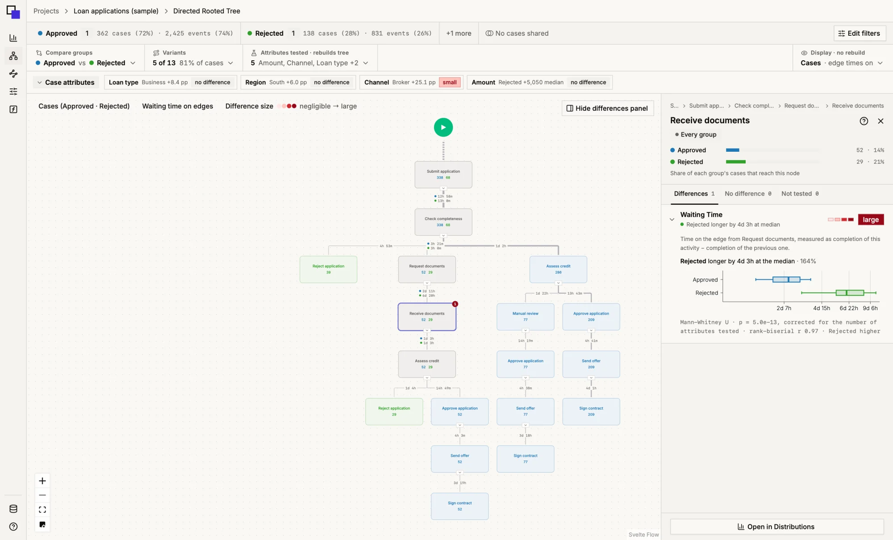
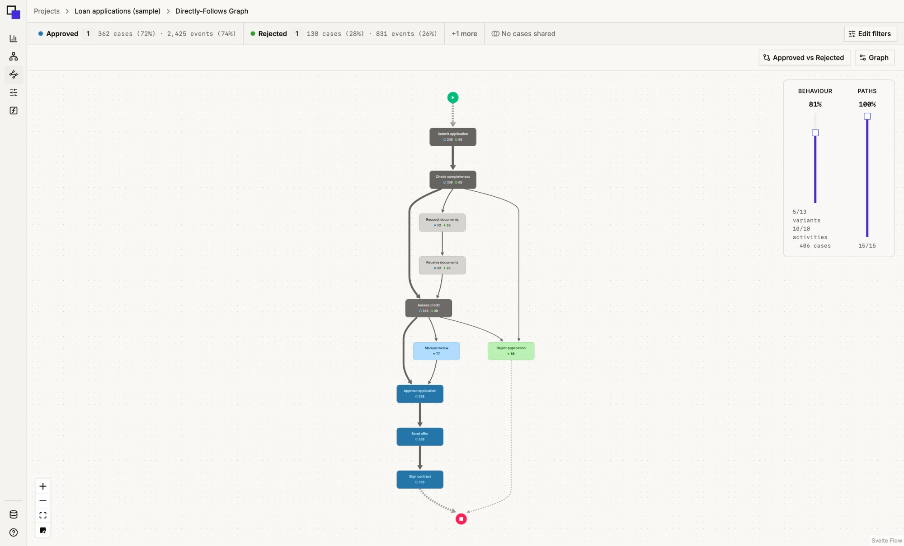

Test every attribute
Each case attribute and every step of the tree is tested between Groups, with corrected p-values and an effect size you can read at a glance.
Build Groups from an Event Log with filters, then compare their variants, graphs and statistics side by side.
Apple Silicon · Windows x64
Open a CSV or XES file and map its columns to case, activity and timestamp.
Stack filters on activities, attributes, outcomes and durations. Each Group is a Filter List you can edit at any time.
Pick two Groups, or a Group against the Original, and every view shows where they part ways.
Statistics, trees and graphs all read the same pair of Groups.



One Event Log. Every Group, side by side.
Explore different perspectives to understand what makes your Groups unique.
Each case attribute and every step of the tree is tested between Groups, with corrected p-values and an effect size you can read at a glance.
Open any node in Distributions and compare curves, box plots and bars. Medians and P90 show how far apart the Groups really are.